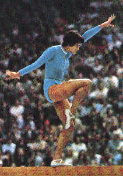

Elvira Saadi (USSR)
1974 World V Bronze Medalist
1975 World Cup AA Bronze Medalist
1972 and 1976 Olympic Team Gold Medalist

Medal Total
Olympics: 2 Gold
World Championships: 1 Gold, 1 Bronze
World Cup: 1 Silver, 4 Bronze
Elvira was born on January 2, 1952 in Tashkent (Uzbek SSR) and began gymnastics at the relatively late age of 12. In 1974 she moved to Moscow to train under Vladimir Aksyonov at Dynamo. After her retirement from competitive gymnastics following the 1976 Olympics, Elvira became a coach. Her most famous pupil was Tatiana Groshkova (1990 European floor silver medalist).
In 1991, Saadi accepted a coaching position in Canada. Since 1994 she has coached at the Cambridge Kips club in southern Ontario and has produced several outstanding Canadian gymnasts, most notably Yvonne Tousek.
Competition Results
1970
Dinamo Championships: 5th AA
USSR Championships: 4th AA
USSR Cup: 6th B, 6th FX
1971
USSR Championships: 10th AA, 6th B
USSR Cup: 9th AA
1972
Olympic Games: 1st Team, 8th AA
USSR Championships: 8th AA, 1st B, 1st FX, 5th V, 5th UB
USSR Cup: 5th AA
USSR-FRG-CAN: 1st Team, 5th AA
USSR-HUN: 1st Team, 2nd AA
USSR-TCH: 1st Team, 3rd B, 3rd FX
1973
Chunichi Cup: 2nd AA
London International: 1st AA
Tokyo Cup: 1st AA
University Games: 1st Team, 3rd AA
USSR Championships: 1st AA, 1st B, 2nd FX
USSR Cup: 5th AA
1974
Moscow News: 3rd AA
Moscow Spartakiade: 1st AA
USSR Championships: 5th AA, 2nd B, 2nd FX, 4th V
USSR Cup: 3rd AA
World Championships: 1st Team, 4th AA, 3rd FX
1975
USSR Championships: 5th AA, 2nd FX, 3rd UB, 3rd B, 5th V
USSR Cup: 1st AA
USSR Spartakiade: 5th AA
World Cup: 3rd AA, 2nd V, 3rd UB, 3rd B, 3rd
FX
1976
Olympic Games: 1st Team, 7th (prelims)
USSR Cup: 4th AA
This page was created on March 07,
2004 and was last updated on June 11, 2026.
© Gymn Forum